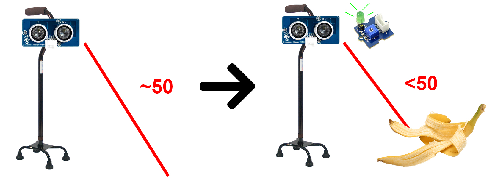
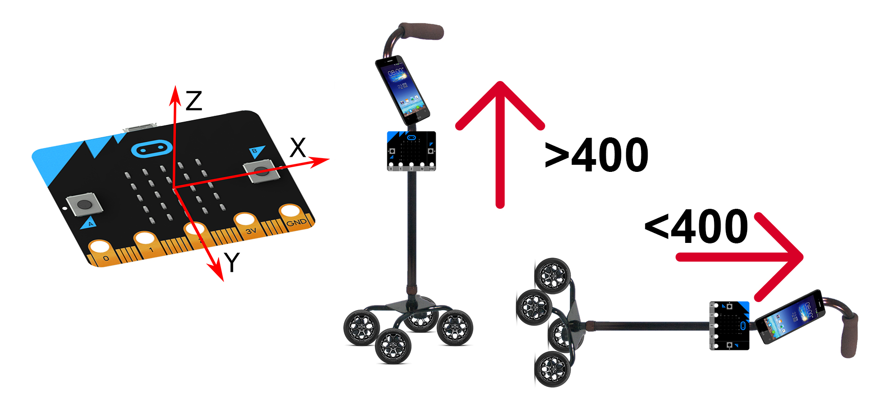
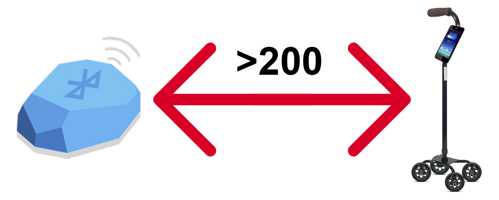
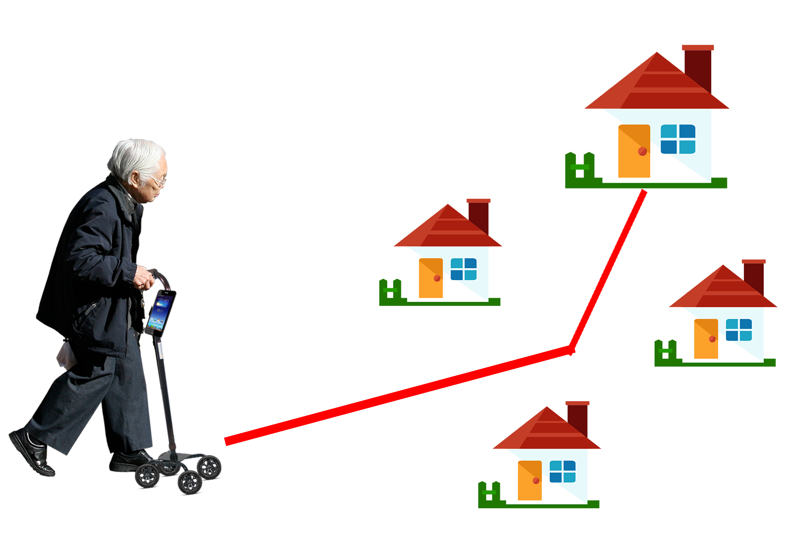

The Smart Walker will be able to sense object that might be able to harm the user/elderly. Therefore, it helps the them to be more aware of what is on the ground that the user/elderly might be approaching to. The Smart Walker is equipped with ultrasonic sensor and warns he or she of dangers when sensed objects.
The LED will light up when the ultrasonic senses any object for example like the banana slip on the ground. If the distance of the sensor is around 50, no danger will be recognise whereas if the sensor less than 50, danger will be recognise.

Fall Detection

If an elderly were to fall down, their family member won't be around them normally. Then if they need help from others, the Smart Walker that droppped onto the ground will alert their family
members that they are in trouble. By making that happen, we have the mircrobit that were installed in the Smart Walker and inside it there is an accelerometer. The accelerometer have a funtion of X,Y,Z. If the Y is more than 400, the Smart Walker will not notify the user's family if it is less than, it will notify their family member.
Are you home?

The Smart Walker can detect the beacon that is in the house where the elderly lives. The beacon will be able to tell if the elderly is getting closer to the house or getting further away from the house.
Future Improvements

The Device on the Smart Walker will be able to show you the way home when the elderly is lost somewhere in the middle of any mall. It will also have a emergency button that will be able to help the elderly for anything if they need it.